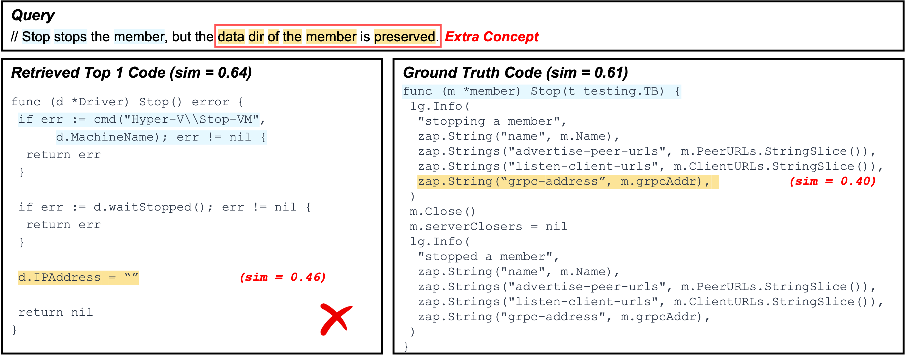
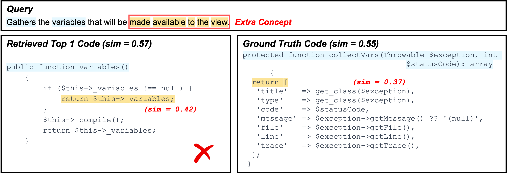
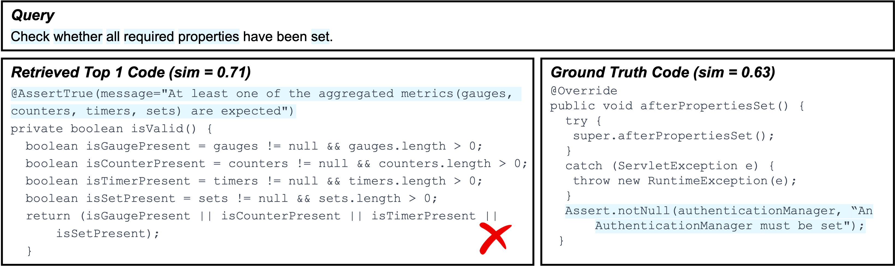
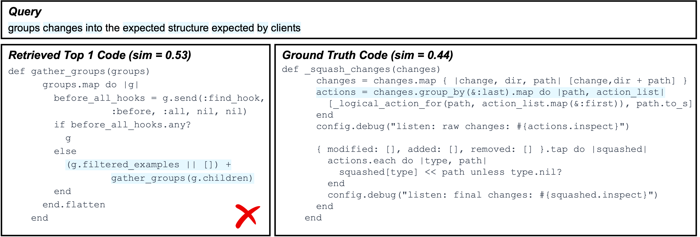
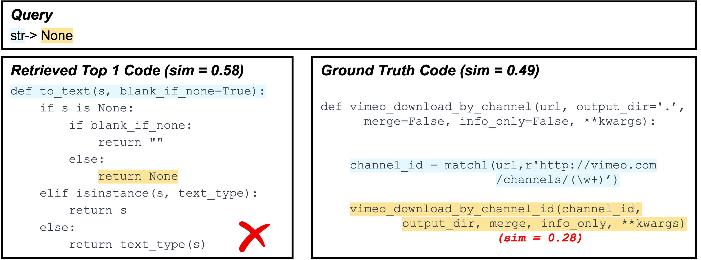
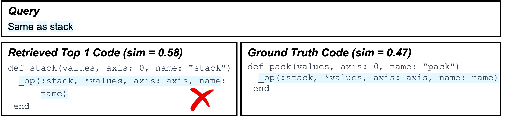
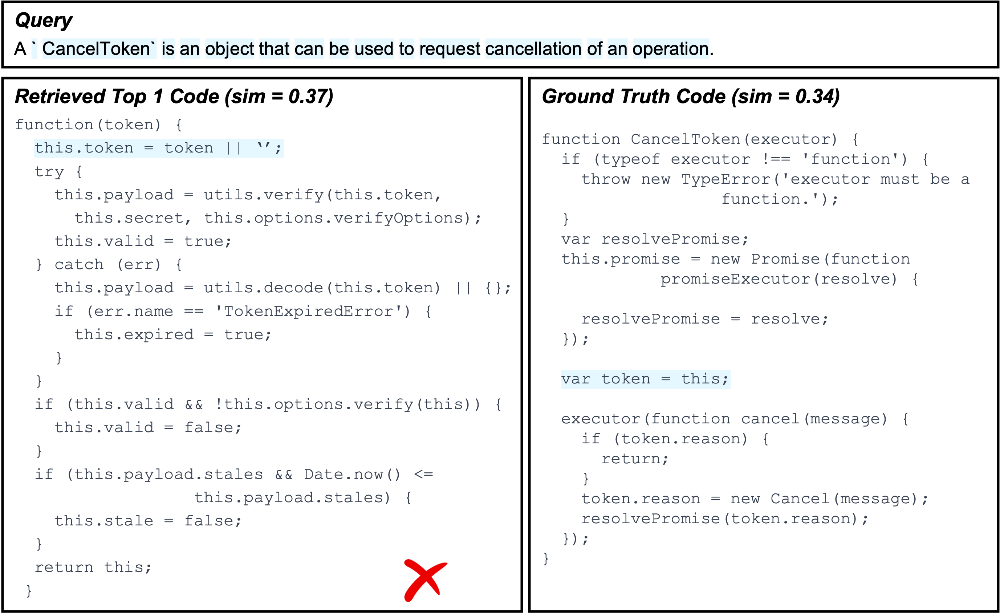
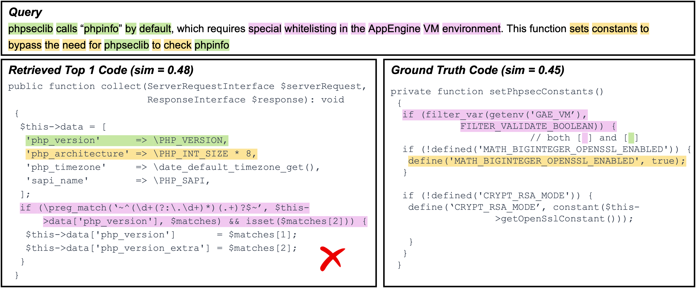
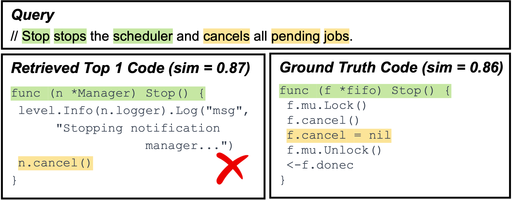
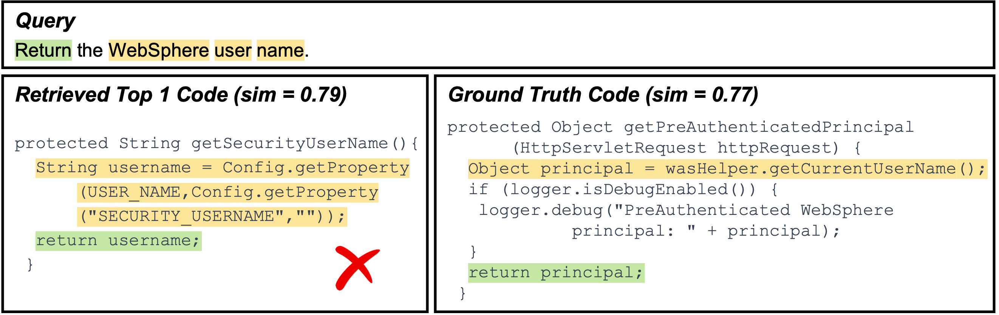

Failure Type: Redundant Low-Information Concepts
cross-languageExample A (Go)

What goes wrong: The highlighted concept (yellow) describes a required logic in the query, but it is not actually implemented in the retrieved code. As a result, the model cannot align this concept to a faithful counterpart and instead matches to loosely related fragments (e.g., code tokens that co-occur with data dir such as address-like fields), which are not evidence of the intended behavior.
Impact: Because the yellow highlighted concept has no real implementation match, the overall similarity/confidence remains low (the retriever is matching weak associations rather than concrete logic), causing the top result to be unverified and ultimately incorrect.
Example B (PHP)

What goes wrong: The query highlights an extra concept (yellow) that is not reflected in the retrieved code implementation. In this case, XSearch fails to find the corresponding evidence in the ground-truth candidate as well, and instead retrieves another snippet that only partially overlaps (e.g., matching a generic return variables-style behavior).
Impact: The retrieved match is driven by generic return/variable patterns rather than the missing highlighted logic, so the similarity/confidence remains not high and the explanation reveals a mismatch: the model aligns what it can find, but cannot justify the highlighted concept with a real implementation.
Failure Type: Single-Concept Collapse during Clustering
Java · RubyExample A (Java)

What goes wrong: Multiple query constraints are highlighted, but clustering collapses them into one single concept. As a result, the concept mixes different intents (e.g., “check whether required properties are set”), and the retriever can only provide a coarse, partially relevant alignment to code snippets.
Impact: The explanation becomes less actionable: instead of showing several fine-grained concept-to-code matches, XSearch presents one blended concept that cannot precisely verify which part of the query is satisfied (or missing) in the code.
Example B (Ruby)

What goes wrong: The highlighted tokens that correspond to different query semantics (e.g., “group changes” and “convert into expected structure”) are treated as mutually similar and end up merged into one concept. This collapsed concept no longer distinguishes the key steps, so the retrieved evidence is overly aggregated.
Impact: Because concept granularity is lost, the model cannot match query semantics cleanly. The retrieval is driven by a blended signal, which increases the chance of partial overlap and retrieves wrong answer.
Failure Type: Underspecified / Too-Short Queries
Python · RubyExample A (Python)

What goes wrong: The query is extremely short (“str → None”) and does not specify what logic should be implemented (e.g., conversion rules, edge cases, or expected return behavior). As a result, the ground-truth code has little explicit overlap with the query’s highlighted evidence, and concept matching yields very low similarity.
Impact: Since the intended behavior is underspecified, XSearch can only retrieve another snippet that is loosely related to the query semantics (e.g., handling None or string conversion patterns), but the similarity/confidence remains not high and the retrieved result is hard to verify.
Example B (Ruby)

What goes wrong: The query is a shorthand note (“Same as stack”) written after previous related changes. It relies on missing context and provides almost no standalone information about the required implementation. Consequently, extracted concepts are too weak to anchor meaningful alignment.
Impact: Without concrete constraints, retrieval becomes inherently ambiguous: multiple candidates can look plausible, yet none is strongly justified by the query evidence. This results in low-confidence matches and makes it difficult for users to validate correctness from the explanation.
Failure Type: Over-Highlighting / Incorrect Token Attribution
JavaScript · PHPExample A (JavaScript)

What goes wrong: The query is definitional (“CancelToken is an object ... cancellation of an operation”), but several generic words (e.g., object, operation, and other boilerplate description fragments) are highlighted as if they were key constraints. These tokens do not uniquely characterize the target implementation and are easy to match in many unrelated places.
Impact: With noisy highlights, XSearch is pulled toward code that shares shallow cues (e.g., generic token handling or “this.token = ...” style statements) rather than the core behavior of cancellation semantics. The retrieved evidence becomes misleading and the matching degenerates into partial overlap instead of verifying the intended logic.
Example B (PHP)

What goes wrong: The query includes many contextual phrases (e.g., environment-specific terms like AppEngine VM, special whitelisting, and other narrative tokens), and some of them are over-highlighted. However, these tokens are not the essential “actionable” constraints. The true intent is closer to changing behavior by setting constants / bypassing a check, but the highlight noise spreads attention across version/info-related tokens (e.g., phpinfo, php_version) that appear in multiple places.
Impact: Because the similarity is influenced by these noisy tokens, the retriever may favor code that looks related to “collecting PHP info / parsing version strings” (left) rather than the function that actually sets phpseclib-related constants under a specific environment (right). The explanation then highlights matches that are incidental, making it harder for users to diagnose why the retrieval is wrong and which constraint is truly missing.
Failure Type: Insufficient Alignment Learning
Go · JavaExample A (Go)

What goes wrong: The query describes a nuanced behavior: stopping a scheduler should cancel pending jobs (and typically coordinate with internal lifecycle state). The top-1 candidate matches the obvious surface cue (Stop()) and includes a cancellation call, but it does not faithfully capture the full operational semantics (e.g., ensuring pending jobs are cancelled/cleared and termination is synchronized). Meanwhile, the ground-truth implementation contains the more complete stop-and-cancel workflow, but its evidence is distributed across multiple statements and is not emphasized enough by the learned alignment.
Impact: The scorer over-values the “easy” lexical match (Stop, cancel) and under-values the functional details (“pending jobs” handling, stop completion). As a result, the correct code is retrieved but ranked lower, yielding a plausible-looking yet incorrect top-1.
Example B (Java)

What goes wrong: The query intent is specific: return the WebSphere user name. The top-1 result aligns strongly to generic signals such as return and authentication-related identifiers (e.g., principal / getCurrentUserName()), but it actually returns a principal object rather than a user-name string. The ground-truth code explicitly resolves a String username from configuration and returns it, but this mapping requires understanding a slightly longer dependency chain (Config.getProperty(...) → username).
Impact: Because alignment is not sufficiently trained to prefer type- and intent-consistent evidence (username-as-string) over broadly related authentication tokens, the correct candidate receives slightly lower similarity. This leads to a top-1 that “sounds right” (user/principal-related) but violates the exact requirement.